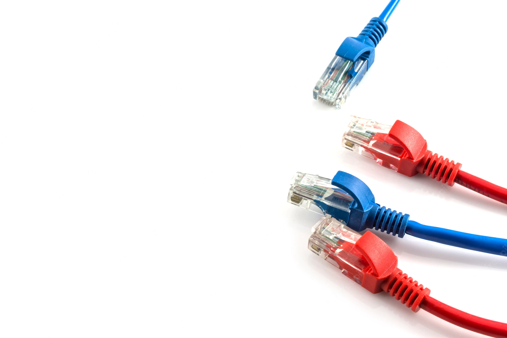

Среды передачи данных в вычислительных сетях
Компьютеры учат нас тому, что нет совершенно никакого смысла запоминать все. Уметь найти необходимое — вот что важно..

Среды передачи данных в вычислительных сетях
Под средой передачи данных понимают физическую субстанцию, по которой происходит передача электрических сигналов, использующихся для переноса той или иной информации, представленной в цифровой форме.
Среда передачи данных может быть естественной и искусственной. Естественная среда - это существующая в природе среда; чаще всего естественной средой для передачи сигналов является атмосфера Земли, но возможно также использование других сред - безвоздушного пространства, воды, грунта, корабельного корпуса и т.д. Соответственно под искусственными понимают среды, которые были специально изготовлены для использования в качестве среды передачи данных. Представителями искусственной среды являются, например, электрические и оптоволоконные (оптические) кабели.
Типы сред передачи данных
Компьютеры — это не просто вещь. Они приведут нас к чему-то большему
В качестве сред передач данных могут выступать:
1. Проводные (воздушные) типы передачи данных:
Представляют собой провода без каких-либо изолирующих или экранирующих оплеток, проложенные между столбами и висящие в воздухе. Еще в недалеком прошлом такие линии связи были основными для передачи телефонных или телеграфных сигналов. Сегодня проводные линии связи быстро вытесняются кабельными. Но кое-где они все еще сохранились и при отсутствии других возможностей продолжают использоваться, в частности, и для передачи компьютерных данных. Скоростные качества и помехозащищенность этих линий оставляют желать много лучшего2. Медно-электрические кабеля:
- коаксиальный кабель
состоит из центральной жилы, её изоляции, и всё это помещено в оплетку из тонкого медного провода либо из алюминиевой или медной фольги. Оплетка предназначена для защиты центральной жилы от наведения на нее помех и уменьшения излучения ею полезного сигнала. На концах сегментов из коаксиального кабеля устанавливаются разъёмы называемые СР-50; BNC. В компьютерных сетях используют коаксиальные кабеля имеющие в основое соединение 50 Ом. Коаксиальный кабель может быть в 2х исполнениях: Тонкий внешним диаметром 5-6 мм. и толстый диаметром 12-14; мм.- витая пара
представляет собой 8 проводов попарно завитых и ламинированных изоляцией. Витые пары маркируются по цвету по цвету: оранжевый – бело-оранжевый; синий – бело-синий; коричневый – бело-коричневый; зеленый – бело-зеленый. На концах сегментов выполненных на витой паре устанавливается разъём RJ45. В работе локальных сетей принимают участие 2-е пары, подключенные соответственно к первому, второму и третьему, шестому контактам разъема RJ45 (если смотреть на разъем так что кабель уходит вниз, а защелка сзади разъёма). Завивка проводов делается для улучшения помехозащищенности и согласованности сетевых компонентов. Развитие проводов витой пары при монтаже допускается на длину 1 см. Провод витая пара выпускается в 2х исполнениях: UTP – неэкранированная витая пара; STP – экранированная.3. Оптоволоконный кабель
имеет два типа передачи: - при многомодовой передаче используется источник света видимого спектра. Лучи хаотически отражаются от стенок световода. - при одномодовой передаче используется лазерный луч, который двигается в доль оси более тонкого световода. Качество передачи и её дальность при одномодовой передаче гораздо выше. Световоды подключаются к устройствам, которые преобразовывают электрический сигнал в световой и наоборот (модем)4. Радиоволны:
Особенности прохождения радиоволн заключаются в следующем: Окружающая землю ионосфера отражает радиоволны длинного, среднего и короткого диапазона. Радиоволны УКВ(сверхвысоко частотного диапазона) прошивают ионосферу и уходят в космос, поэтому для связи со спутником используется диапазон СВЧ. Также диапазон СВЧ используется для построения компьютерных сетей по технологии WI-FI. Необходимо учитывать то, что радиоволны СВЧ диапазона не обладают способностью огибать препятствия и любое препятствие, встречающееся на их пути, их поглощает. Поэтому основное требование к WIFI сетям прямая видимость между точкой доступа и сетевыми радио-картами.
Ethernet
У плагиатора две музы: одну зовут Copy, другую — Paste
Введение в интернет
Интернет – это глобальная сеть, которая объединяет огромное количество компьютеров по всему земному шару и дает возможность получения доступа к информационным ресурсам

Позволяет связаться с людьми с разных точек мира

Помогает быстро находить нужную информацию
Подпишись чтобы узнать больше
Контакты


Остались вопросы? Свяжись с нами.
Попытаемся объяснить. Но это не точно.